背景图片与护眼底色
w00025 t19。图都是真实页面加注入样式，没有改产品代码。测试图是故意做的最不利情况：亮云、深树、彩色块混在一起。
对比度是把文字隐藏后，量正文区域每个位置的背景与文字的 WCAG 对比度。正文要求至少 4.5。
第 2 轮
第 1 轮的遮罩下限 75% 要重新定：当时说“任何图片都读得清”说过头了。75% 只保证正文主色逐像素的对比度够，图的细节还是和字混在一起；次要文字、链接在 75% 也不到 4.5。下面是一张细节很多的图上的长文，比值之外用眼睛看。
图片怎样才读得动 待定
图保持清晰，遮罩下限 92%
看得出是什么图，但很淡。75% 的样子放在后面作对照：字和图混在一起，暗色尤其明显。
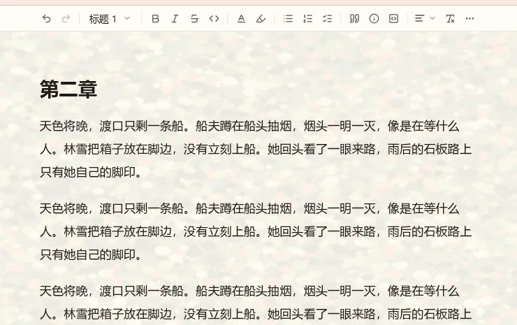
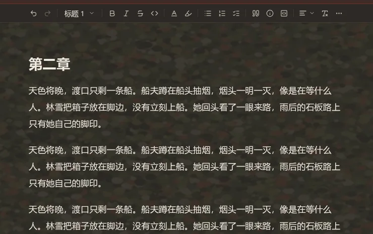
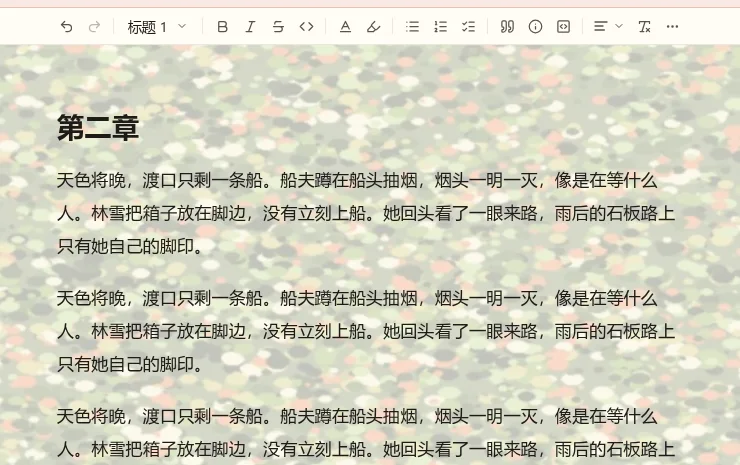
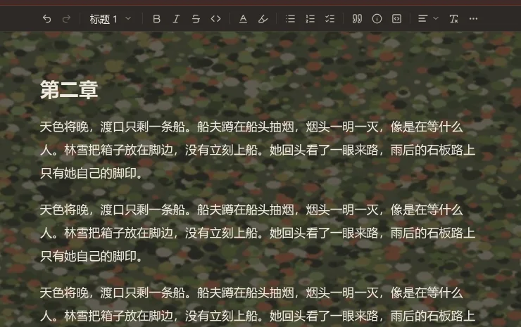
图固定模糊，遮罩下限 75%
色彩更浓，读起来也舒服，但看不出图的内容，只剩氛围。
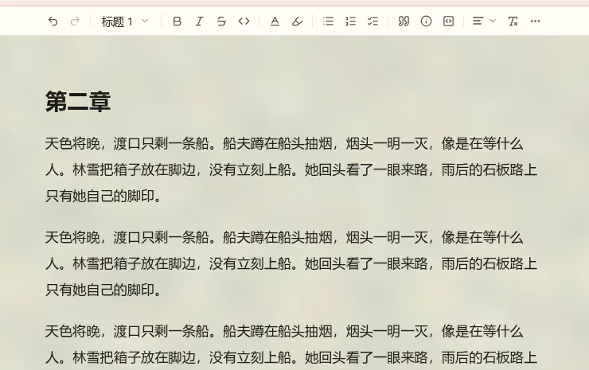
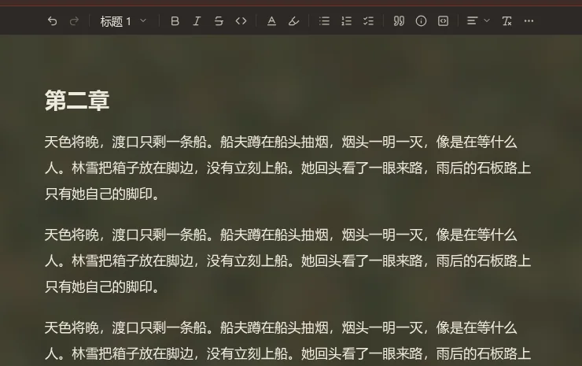
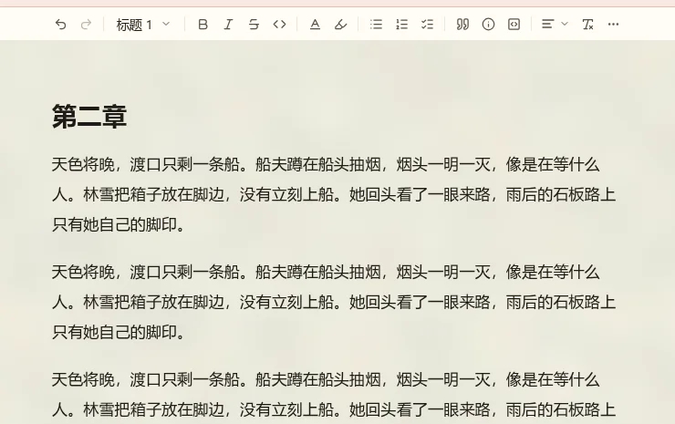
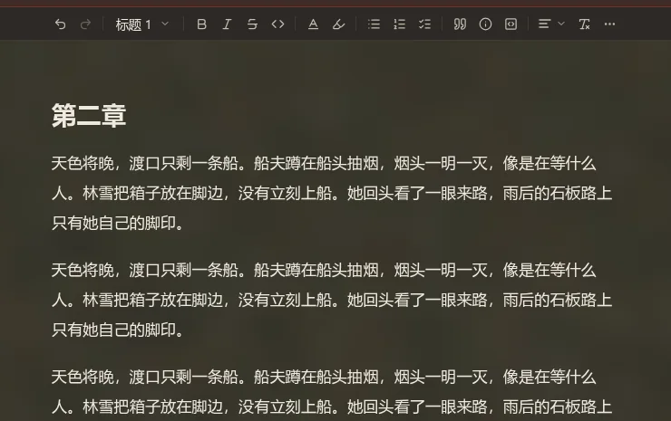
都给：一个“模糊”开关，下限跟着变
开模糊时下限 75%，关模糊时下限 92%。缺省开模糊、遮罩 85%。滑块到下限就停。
推荐都给。想要氛围的人和想看清自己照片的人都有路，读不动的组合选不出来。多一个开关，代价很小。正文之外的文字（次要文字、链接）的下限实施时按主题实测，可能比这两个数再高一点。
第 1 轮
背景放在哪里 已定
只在正文区域
只改编辑区，侧栏、标签这些不动。
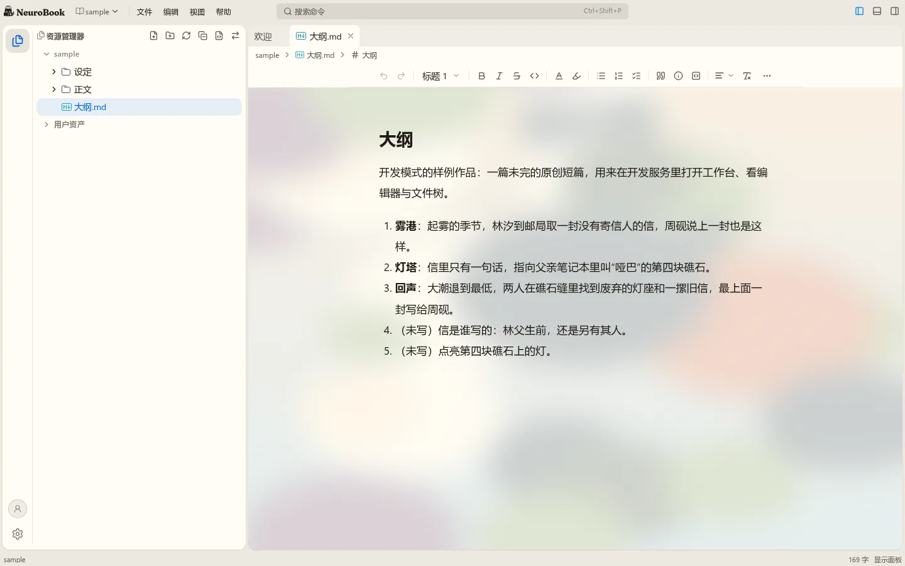
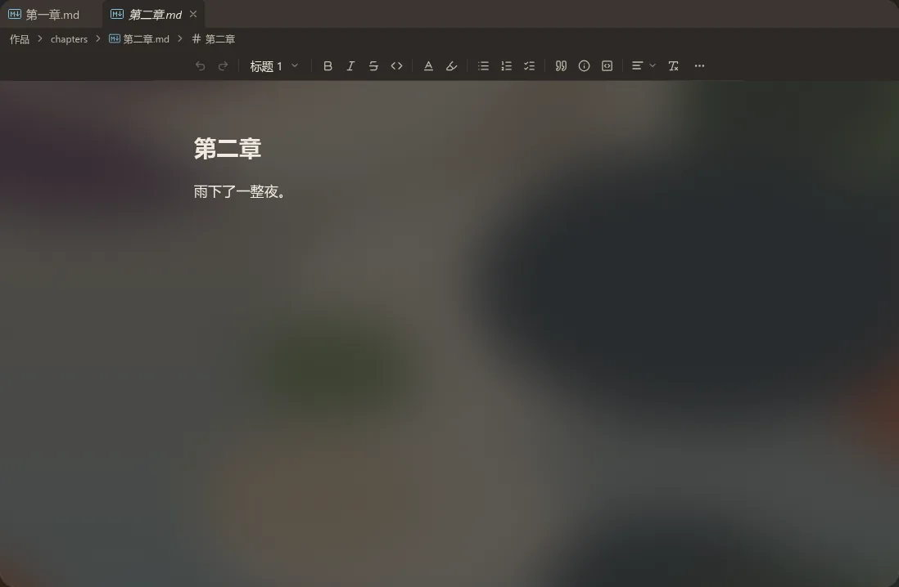
| 遮罩不透明度 | 亮色：最差 / 中位 | 暗色：最差 / 中位 |
|---|---|---|
| 60% | 7.4 / 10.7 | 3.4 / 4.8（不合格） |
| 78% | 10.9 / 13.2 | 5.9 / 7.2 |
| 90% | 13.8 / 15.0 | 8.8 / 9.6 |
整个窗口
图铺在窗口最底下，所有面板半透明。看得出是壁纸，但所有面板都受影响。
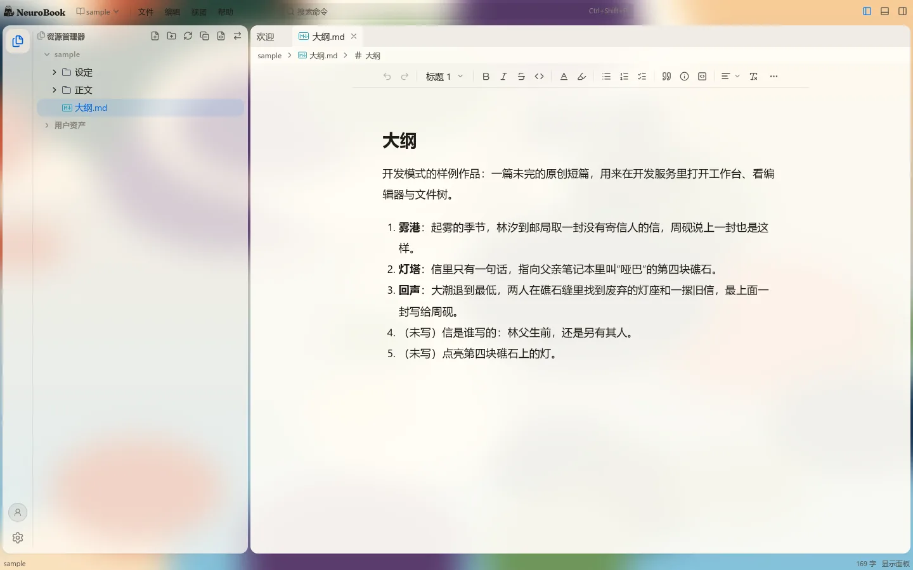
| 面板不透明度 | 亮色正文：最差 / 中位 |
|---|---|
| 55% | 11.3 / 13.4 |
| 75% | 14.9 / 15.6 |
| 90% | 16.3 / 16.4 |
只量了亮色的正文。暗色、侧栏与标签的小字都没量，它们字更小，要求更严。
开发者定了两种都做。当时的推荐是只在正文区域：写作时看的就是这一块，影响范围小，也能先把可读性的下限做对。整个窗口以后还能加，要动所有面板的面色，主题也要一起验。
护眼模式怎么做 已定
图片之外，再给几个纯色底
豆沙绿、羊皮纸这类预设，也能自己选颜色。纯色不需要遮罩。
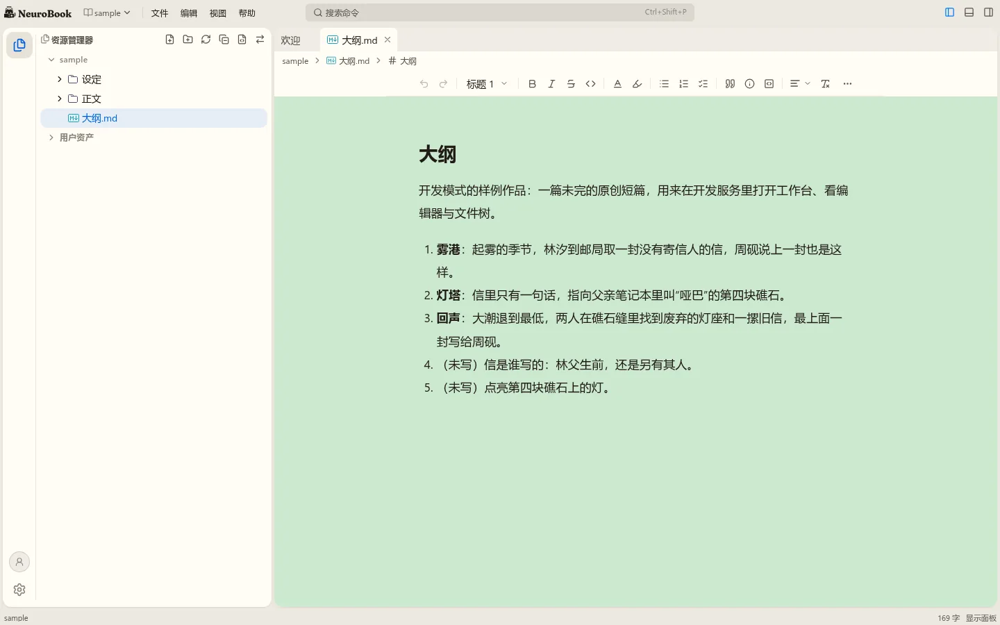
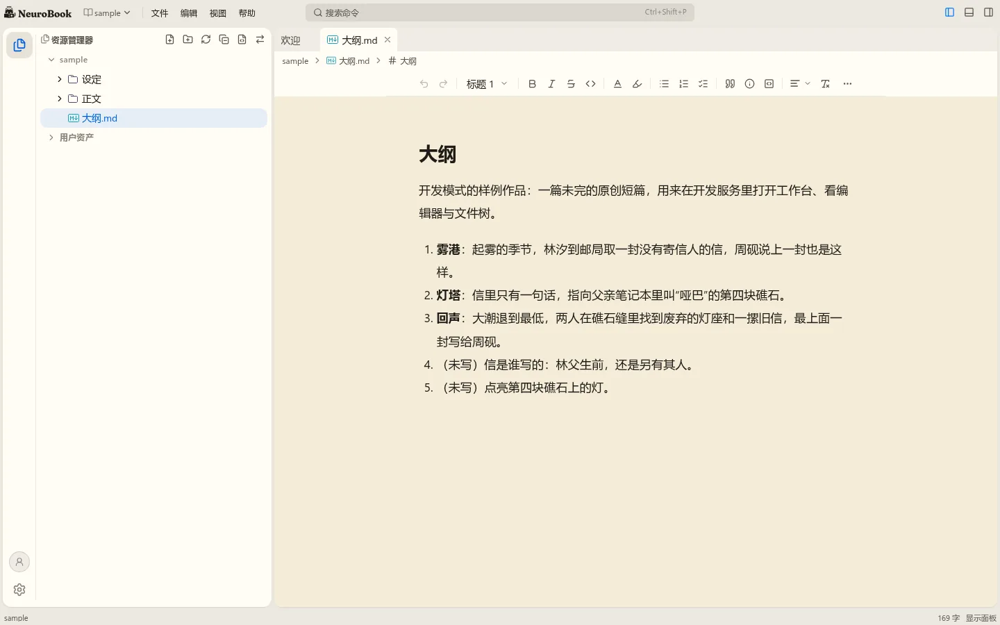
只做图片
想要纯色就自己传一张纯色图。
开发者选了都做。护眼要的多半就是一个颜色，让人为此找图不合理；两者是同一个设置项的两种取值，多不了多少工作。